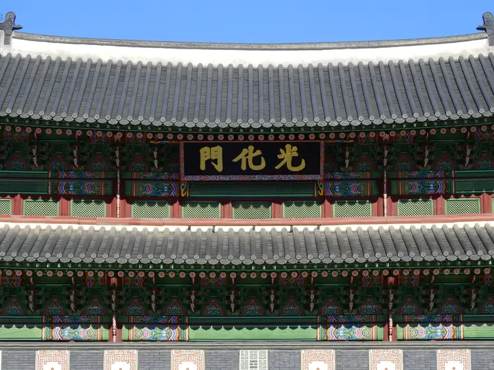
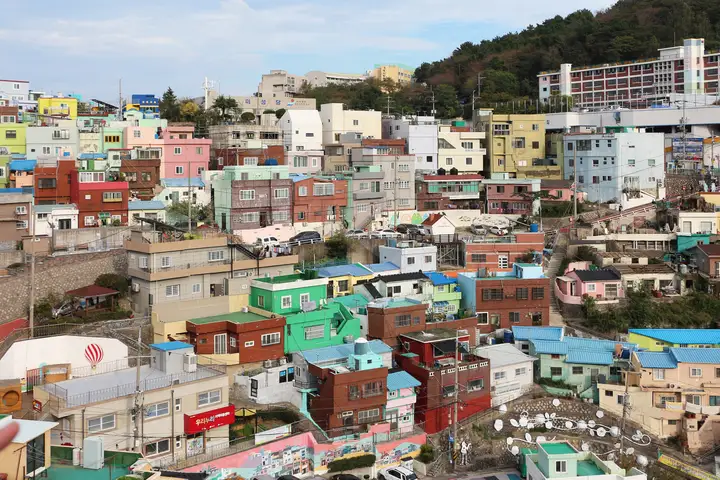

Play · Korean chess
Your first Janggi moves
Learn all seven piece types on a practice board, from the sideways soldier to the cannon that jumps a screen.
Learn Janggi →Explore Korea by playing
Start with five daily questions, then explore Korean landmarks, learn Janggi, or read about Korean traditions.

Cover photo: Bernard Gagnon, Wikimedia Commons (CC0).
Historic Gyeongju3 photos · Silla landmarks

Palaces & Gates of Seoul5 photos · Royal halls and old city gates
Beyond Seoul4 photos · Busan, Jeju, Buyeo and YeongjuRoute photos: Gyeongju, Bernard Gagnon; Seoul, Huntsmanleader; Busan, Bernard Gagnon. CC0 1.0.
Play · Korean chess
Learn all seven piece types on a practice board, from the sideways soldier to the cannon that jumps a screen.
Learn Janggi →Read · Travel notes
Find a first-trip checklist, airport and subway guides, food tips and family trip ideas from K-Trip Notes.
Browse travel guides →